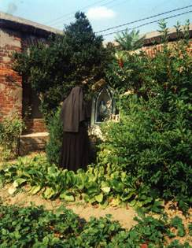
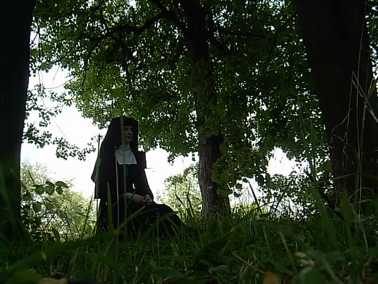

Pójdź za Mną,
na górę, osobno...
...jeśli pragniesz złożyć Bogu radosną ofiarę z siebie w życiu ukrytym, oddanym modlitwie i pracy.
Zastanawiasz się? Szukasz? Wahasz się? Napisz! Przyjedź! Zobacz!
Dziewczęta myślące o życiu zakonnym i pragnące rozpoznać swoje powołanie zapraszamy na indywidualne rekolekcje. Termin do uzgodnienia.
Klasztor Sióstr Wizytek
ul. Klasztorna 12
38-200 Jasło
siostry@jaslo.wizytki.pl

Każde powołanie, a więc i powołanie do życia konsekrowanego jest nieocenionym darem miłującego Boga. Ma zawsze swój początek w Bogu, rodzi się z wewnętrznego spotkania z miłością Chrystusa. Spotkanie z tą Miłością staje się na wskroś czymś osobistym. To Bóg pierwszy wybiera, a człowiek odpowiada na to wezwanie dobrowolnym wyborem. Odpowiedź taka tylko wtedy jest prawdziwie wolna, jeżeli dojrzała po spokojnym namyśle i modlitwie.
Jedna z sióstr z naszej wspólnoty w krótkich słowach opisuje swoje powołanie: "Wyczytałam w książeczce do nabożeństwa, że przed wyborem drogi życia trzeba odbyć spowiedź generalną. W niedługim czasie po jej odprawieniu Opatrzność Boża postawiła mnie przed wyborem: Bóg czy człowiek. Zdecydowanie w duszy powiedziałam: Któż jak Bóg! Duch Święty sprawił, że wszystkie
światowe przyjemności mi zobojętniały. Tęskniłam tylko za Panem Jezusem. Raz przyszłam na odpust Najśw. Serca Jezusa do kościoła sióstr wizytek na Jasielskiej Górce. Ogarnęła mnie wówczas taka radość, że postanowiłam zostać zakonnicą w tym właśnie klasztorze. Pan Jezus obdarzył mnie łaską wielkiego zaufanie Jemu. W klasztorze jestem już 50 lat. Życie modlitwy, pracy i codzienne ofiary składane za cały świat dają mi niewysłowione szczęście. Cały sercem dziękuję Bogu za tę niezasłużoną łaskę."
Ojciec św. Jan Paweł II skierował do młodzieży w 1996r. słowa: "Do was młodzi mówię, jeśli słyszycie wezwanie Chrystusa nie odrzucajcie go. Odważnie wejdźcie na wielkie drogi świętości, które wytyczyli wybitni święci i święte idąc za Chrystusem. Bądźcie wierni ideałom typowym dla waszego wieku, ale nie wahajcie się przyjąć zamysłu Boga wobec was, jeśli On was wezwie, byście szukali świętości w życiu konsekrowanym. Podziwiajcie wszystkie dzieła w świecie, ale umiejcie zatrzymać wzrok na rzeczywistościach, które nigdy nie przeminął. Trzecie tysiąclecie czeka na wkład wiary i inicjatywy rzeszy młodych konsekrowanych, aby świat stał się miejscem bardziej radosnym, zdolnym przyjąć Boga a w Nim wszystkich Jego synów i córki."
Jedynie w światłach wiary można odkryć utajone piękno i sens życia kontemplacyjnego. Siostry wizytki żyjące w klauzurze, odłączone od świata, ale nie w izolacji od jego nabrzmiałych problemów wiedzą, że wykonują powierzone im zadanie w Kościele i w rodzinie ludzkiej przez modlitwę, pokorną pracę, ukrytą i cichą ofiarę, bez rozgłosu, bez hałasu, ale według Bożej woli ukazanej w tym powołaniu, zawsze aktualnym.
Pan wezwał mnie po imieniu
O podjęciu w przyszłości życia zakonnego zaczęłam myśleć w wieku 14 lat. Był to czas przygotowania do przyjęcia sakramentu bierzmowania. Ksiądz katecheta zachęcał do uczestniczenia we Mszach św. w ciągu tygodnia, a ponieważ do kościoła miałam blisko, zaczęłam codziennie uczestniczyć w Eucharystii. Zaczęłam też sama więcej się modlić, czytać Pismo św., wcześniej o codziennym pacierzu przypominała mi mama.
Sumiennie przygotowywałam się do przyjęcia Sakramentu Bierzmowania, po którym miałam stać się dojrzałym chrześcijaninem, rycerzem Chrystusa, dającym świadectwo wiary. Na ile potrafiłam, otworzyłam się na działanie łaski i dar Ducha Świętego. Świadomie wybierałam życie wiary, chciałam służyć Panu Jezusowi, ale jak, tego jeszcze nie wiedziałam. Życie zakonne było jedną z opcji, dość mglistą, gdzieś głęboko
w sercu, w niepewnych, urywanych myślach. Ja miałabym być zakonnicą? Miałam koleżanki bardziej pobożne, z bardziej religijnych rodzin, więc czy ja się nadaję? Czy mogę być siostrą w habicie? Nie wiem jak to się stało, że koleżanki, które nie były mi zbyt bliskie, były z innej "paczki", zaproponowały mi wyjazd na rekolekcje powołaniowe do sióstr bezhabitowych. To był mój pierwszy bliższy kontakt z siostrami
zakonnymi. Tam Pan Bóg dał mi odpowiedź na moje wątpliwości. To była krótka chwila, błysk światła w duszy, doświadczenie całkowicie duchowe Bóg chce mnie mieć wyłącznie dla siebie. "O Panie, to Ty na mnie spojrzałeś, Twoje usta dziś wyrzekły me imię" słowa popularnej piosenki uczyniłam wtedy swoją modlitwą. Chcę być zakonnicą, ale w jakim zakonie? Podczas wakacji i ferii zimowych jeździłam do paru zgromadzeń
szukając swojego miejsca. Wszędzie mi się podobało i jednocześnie czułam, że to nie dla mnie. Jak rozpoznać, do którego zgromadzenia mam wstąpić? to był poważny problem. Zaczynałam się zastanawiać czy nie powinnam po maturze pójść na studia, jeśli nie wiem do której furty mam zapukać. Modliłam się o światło Ducha Świętego w rozeznaniu i zrealizowaniu powołania. W mojej rodzinnej parafii, w pierwsze piątki
miesiąca była odprawiana Msza św. za powołanych do służby Bożej z naszej parafii i o nowe powołania. Myśl, że ci wszyscy ludzie uczestniczący w tych Mszach modlą się także za mnie, choć o tym nie wiedzą, łagodziła moje wewnętrzne rozterki i dodawała ufności. Podczas jednych z rekolekcji wpadła mi do rąk księga zawierająca wyjaśnienie pochodzenia i znaczenia imion oraz krótkie wzmianki o świętych, którzy nosili to imię.
Otrzymałam na chrzcie imię Joanna, a przy nim było wymienionych kilka świętych, między innymi św. Joanna Franciszka de Chantal, założycielka Zakonu Nawiedzenia NMP ( wizytki ). Zaciekawiły mnie te wizytki, o których wcześniej nie słyszałam. W tym samym bloku, co ja mieszkali rodzice kleryka ze zgromadzenia księży sercanów. Podczas wakacji, gdy ten kleryk przechodząc zagadnął naszą grupkę młodzieży,
odważyłam się zapytać czy wizytki są w Polsce. Uśmiechnął się, bo były od 350 lat! On często odwiedzał siostry wizytki w Krakowie. Przywiózł mi od nich broszurki powołaniowe. Okazało się, że to zakon klauzurowy! ale są też siostry "zewnętrzne" do zewnętrznej obsługi klasztoru, więc pomyślałam, że będę tą zewnętrzną. Zamierzałam nawiązać kontakt z siostrami w Krakowie. Zanim to uczyniłam poznałam na pieszej
pielgrzymce na Jasną Górę dziewczynę, która była aspirantką w jednym z czynnych zgromadzeń. W trakcie rozmowy o powołaniu, wspomniałam, że zamierzam napisać do wizytek w Krakowie, a ona na to, że zna wizytki z Jaśle i żebym do nim napisała, bo im brakuje powołań i na pewno mnie przyjmą. Tak też uczyniłam. Umówiłam się na trzydniowe rekolekcje, ale siostry odwołały mój przyjazd z powodu epidemii grypy w klasztorze,
co moja mama skomentowała krótko "nie chcą cię". Ja jednak nie rezygnowałam. Odwiedziłam siostry w innym czasie. Coraz bardziej tęskniłam za wizytkami, a do serca powracał pokój. Powoli dojrzewało też powołanie kontemplacyjne, akceptowałam myśl o życiu w klauzurze. Wreszcie przyszła chwila poinformowania rodziców o mojej decyzji. O ile mogli się spodziewać, że wybiorę życie zakonne, to zakon kontemplacyjny był zupełnym zaskoczeniem.
"Nie będziesz już więcej tańczyć" bardzo lubiłam i umiałam tańczyć, "nie pójdziesz już nigdy w góry" kochałam góry i byłam dobrym piechurem itd itp. Byłam gotowa zostawić wszystko dla Jezusa, choć nie było to łatwe i cieszyłam się, że po wakacjach wstąpię do klasztoru sióstr wizytek w Jaśle. Tymczasem rodzice stwierdzili, że jeśli nie idę na studia, to mogę pomóc mojej siostrze w opiece nad dziećmi, aby ona wraz z mężem mogli
obronić prace magisterskie w terminie, nie przedłużając czasu studiów. Po roku, jeśli nie zmienię zdania, będę mogła zrealizować swoje pragnienie. Była to dla mnie decyzja bolesna, wydawało mi się, że rok to bardzo długo i że mogę straci powołanie. Matka przełożona radziła mi posłuchać rodziców, ksiądz spowiednik radził mi ten rok dobrze wykorzystać duchowo, a pomóc miała mi w tym książka św. Franciszka Salezego "Filotea. Droga do życia pobożnego".
Czytałam ją bardzo uważnie i poznawałam duchowość salezjańską, którą cechuje prostota, radość i ufne zdanie się na Boga, wierność w wypełnianiu zwyczajnych, codziennych obowiązków swego staniu, systematyczna modlitwa. Wyjazd na dłuższy czas z rodzinnego domu, zamieszkanie w innym środowisku i zmierzenie się z tęsknotą były dobrą próbą przed definitywnym wstąpieniem do Zakonu. Po roku utwierdzona w swej decyzji, bardziej świadoma tego,
z czego rezygnuję, a co i Kogo wybieram przekroczyłam próg klasztoru. Ciężkie drzwi klauzury zamknęły się za mną na zawsze, a wewnątrz przywitały mnie uśmiechnięte siostry z otwartymi ramionami. Od 33 lat jestem szczęśliwą wizytką wdzięczną Bogu za łaskę powołania i wytrwania. Podczas pierwszych ślubów zakonnych otrzymałam imię św. Matki Założycielki, czyli do imienia od chrztu dodano mi Franciszka. Fakt ten bardzo wzruszył moich rodziców,
bo przypomnieli sobie, że do 4 roku życia nazywali mnie Franią. Parafrazując słowa proroka Jeremiasza mogę powtórzyć, "wiem Panie, że nie człowiek wyznacza swą drogę", "ukształtowałeś mnie w łonie mej matki", "od urodzenia byłeś moim Opiekunem" i "wezwałeś mnie po imieniu". Każde powołanie ma inną historię, ale każde jest darem i skrywa pewną tajemnicę ( św. Jan Paweł II "Dar i Tajemnica"). Pan wezwał mnie, bym wraz z Maryją z tajemnicy
Nawiedzenia uwielbiała Go całym sercem i z całej duszy śpiewała Jego chwałę w codziennej Liturgii Godzin; bym śpieszyła z modlitewną pomocą potrzebującym łaski Bożej, proszących o duchowe wsparcie; bym wraz z Maryją pokonywała góry grzechu, niosąc Jezusa i Jego miłość tam, gdzie brak przebaczenia, życzliwości, wyrozumiałości, a narastające przez lata wzajemnie żale, pretensje i zazdrości wydają sie nie do przekroczenia. W roku jubileuszu 25-lecia
moich ślubów zakonnych otrzymałam wyjątkową łaskę modlitwy przy grobach świętych Założycieli Zakonu Nawiedzenia NMP, w Annecy, we Francji, gdzie powstał pierwszy klasztor sióstr wizytek nazywany "świętym źródłem" Zakonu. Przy tej okazji, będąc u podnóża francuskich Alp pielgrzymowałam do La Salette, miejsca wysoko w górach, do którego Matka Najświętsza pośpieszyła, by ratować ludzkość, by pokazać im drogi nawrócenia i pojednania. Do młodych
rozeznających swą drogę życia chcę powiedzieć wraz z Panem Jezusem: "Odwagi, nie bójcie się"!
s. Joanna Franciszka VSM
REKOLEKCJE POWOŁANIOWE DLA DZIEWCZĄT
Dziewczęta myślące o życiu kontemplacyjnym i pragnące rozpoznać swoje powołanie zapraszamy na indywidualne rekolekcje w klasztorze prowadzone przez siostry.
Czas trwania 3-7 dni.
Termin do uzgodnienia.
Tematy
- "Wybrałem cię sobie za narzędzie" - moje powołanie
- "Panie naucz nas się modlić" - moja codzienna modlitwa
